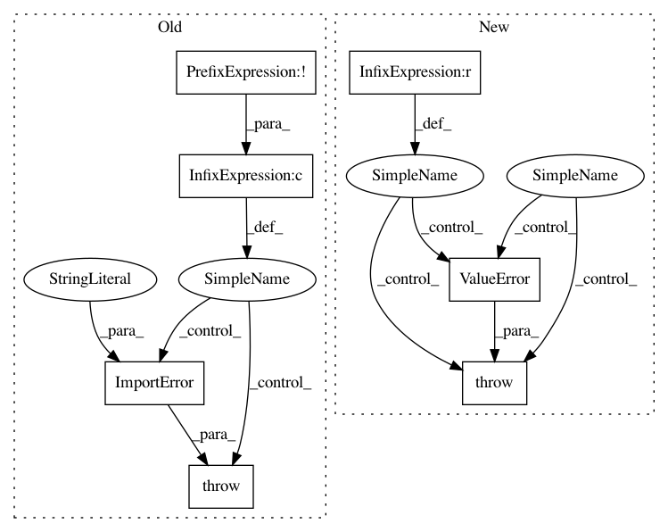

042355fc5686d2f9f7061fab6c93f88015d9c6d6,pygsp/plotting.py,,plot_graph,#Any#Any#,114
Before Change
if G.coords.shape[1] not in [2, 3]:
raise AttributeError("Coordinates should be in 2 or 3D space.")
if qtg_import and (default_qtg or not plt_import):
_qtg_plot_graph(G, **kwargs)
elif plt_import and not (default_qtg and qtg_import):
_plt_plot_graph(G, **kwargs)
else:
raise ImportError("No drawing library installed. Please "
"install matplotlib or pyqtgraph.")
def _plt_plot_graph(G, savefig=False, show_edges=None,
show_plot=True, plot_name="", ax=None):
After Change
if backend is None:
backend = BACKEND
if backend == "pyqtgraph" and qtg_import:
_qtg_plot_graph(G, **kwargs)
elif backend == "matplotlib" and plt_import:
_plt_plot_graph(G, **kwargs)
else:
raise ValueError("The {} backend is not available.".format(backend))
def _plt_plot_graph(G, savefig=False, show_edges=None,
show_plot=True, plot_name="", ax=None):
In pattern: SUPERPATTERN
Frequency: 3
Non-data size: 7
Instances
Project Name: epfl-lts2/pygsp
Commit Name: 042355fc5686d2f9f7061fab6c93f88015d9c6d6
Time: 2017-08-23
Author: michael.defferrard@epfl.ch
File Name: pygsp/plotting.py
Class Name:
Method Name: plot_graph
Project Name: epfl-lts2/pygsp
Commit Name: 042355fc5686d2f9f7061fab6c93f88015d9c6d6
Time: 2017-08-23
Author: michael.defferrard@epfl.ch
File Name: pygsp/plotting.py
Class Name:
Method Name: plot_signal
Project Name: ray-project/ray
Commit Name: 7b27ce2b236e29d82e33c5e07645f845d433973c
Time: 2020-03-27
Author: maximsmol@gmail.com
File Name: python/ray/util/sgd/torch/torch_runner.py
Class Name: TorchRunner
Method Name: __init__